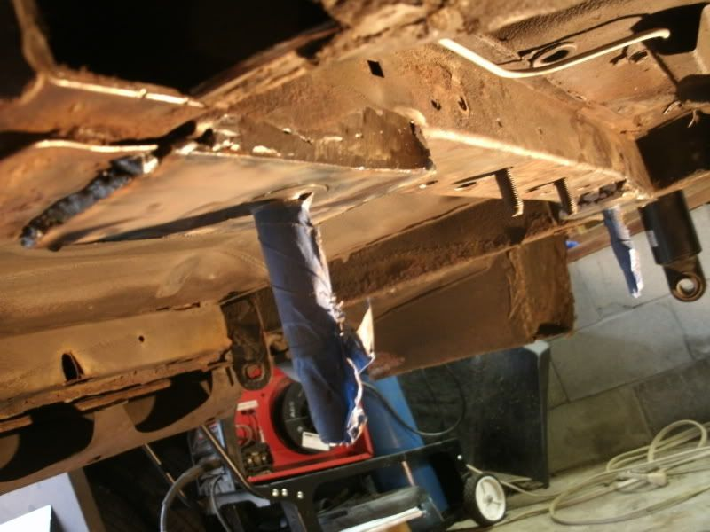
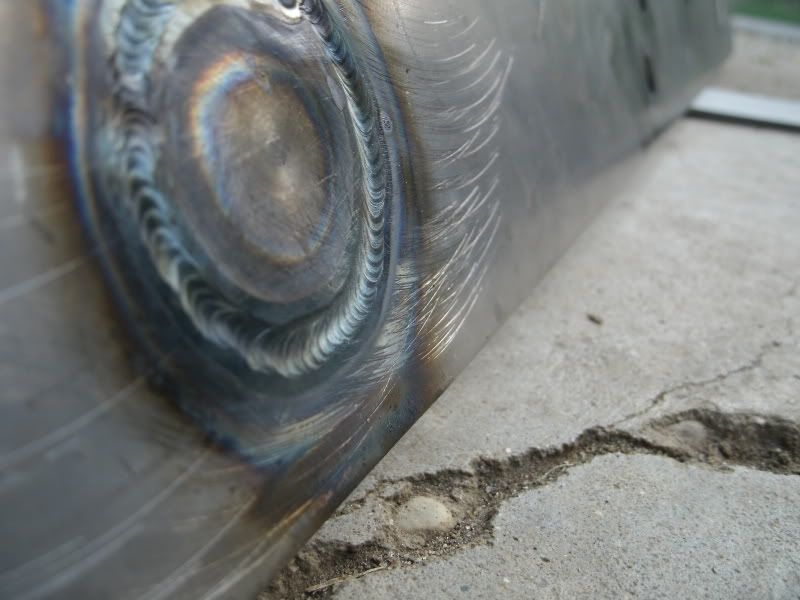

-
Re: S13/S14/S15 Subframe Conversion Kit GB-Pictures and WHY! pg6
stprasinz wrote: wait, the studs won't be welded to the cross member? -
Re: S13/S14/S15 Subframe Conversion Kit GB-Pictures and WHY! pg6
the studs pictured are the ones I'm concerned with. if they aren't welded to the location template?Mike_GruiZinga wrote: Exactly. Very difficult to form it to the complex curvature and get it welded perfectly straight.
The bar is just a template for welding. Also, given the precision of the kit and the variance in chassis/subframe, no parts come pre-welded as initially considered. -
Re: S13/S14/S15 Subframe Conversion Kit GB-Pictures and WHY! pg6
[quote]stprasinz wrote:These? You need to be more clear.Originally posted by Mike_GruiZinga
1985 NA2T(now RB) * 1988 SS x2 * 1984 AE x3 * 2006 350Z

-
Re: S13/S14/S15 Subframe Conversion Kit GB-Pictures and WHY! pg6
yes. the studs that are used to actually mount the s13(or 14) subframe to the plate that will be welded to the body of the car -
Re: S13/S14/S15 Subframe Conversion Kit GB-Pictures and WHY! pg6
and 4 posts later says nothing will be welded. that is a weld, and I'm pretty sure is crucial for the alignment of the assembly. I thought that was the only part he was going to weld in the first place. then said nothing will be! -
Re: S13/S14/S15 Subframe Conversion Kit GB-Pictures and WHY! pg6
If anyone that commited to buying a Subframe conversion kit and changed there mind or doesn't have the cash please let me know and I will take your spot!
Thanks Mark McLeod 84 AE Mod
84 AE Mod -
Re: S13/S14/S15 Subframe Conversion Kit GB-Pictures and WHY! pg6
if you take there spot are you getting the sub-frame bushings to :Pmarkleemcleod wrote: If anyone that commited to buying a Subframe conversion kit and changed there mind or doesn't have the cash please let me know and I will take your spot!
Thanks Mark McLeod1984 300ZX - 1988 VG30T Engine, Trans, Diff, ECU
1987 300ZX TURBO - ( Parts Car ), 1988 300ZX TURBO - ( Parts Car )
1972 240Z -- Full restore - L28ET L6 Engine from 280zx, T-5 transmission, Rear diff from the 87
1998 Mazda B-2500, And a lot of bikes -
Re: S13/S14/S15 Subframe Conversion Kit GB-Pictures and WHY! pg6
Absolutley ! 84 AE Mod -
Re: S13/S14/S15 Subframe Conversion Kit GB-Pictures and WHY! pg6
So you are asking about HIM welding it, vs it being welded during installation? If he says no welding, then it will probably be up to you to weld it. Why is that a problem? You will have to be welding anyways, the stud is the least of your worries, lol.stprasinz wrote: and 4 posts later says nothing will be welded. that is a weld, and I'm pretty sure is crucial for the alignment of the assembly. I thought that was the only part he was going to weld in the first place. then said nothing will be!1985 NA2T(now RB) * 1988 SS x2 * 1984 AE x3 * 2006 350Z
-
Re: S13/S14/S15 Subframe Conversion Kit GB-Pictures and WHY! pg6
^^^^
If you're worried about that little amount of welding how do you expect to complete the conversion?!?!88 N/A 300zx (Slow....) -
Re: S13/S14/S15 Subframe Conversion Kit GB-Pictures and WHY! pg6
I now see what you're saying. And I'm confused now too… does "no parts will be pre-welded" mean that the front mounts are going to be just a bunch of metal templates, and we have to weld them all up, or are they going to be welded and we have to cut the front subframe mount holes and slip those in- and make some welds to just hold them on the subframe instead of actually weld up the entire piece.stprasinz wrote: and 4 posts later says nothing will be welded. that is a weld, and I'm pretty sure is crucial for the alignment of the assembly. I thought that was the only part he was going to weld in the first place. then said nothing will be!
If it's just a bunch of flat pieces of metal we have to weld together… then.... kinda less than what was expected. -
Re: S13/S14/S15 Subframe Conversion Kit GB-Pictures and WHY! pg6
Will type reply in morning."produce first.talk second." -
Re: S13/S14/S15 Subframe Conversion Kit GB-Pictures and WHY! pg6
poor mike"Its the s12's sexy over weight step daughter, the z31" -
Re: S13/S14/S15 Subframe Conversion Kit GB-Pictures and WHY! pg6
as long as this is complete is all I wanted to know.
its the main locator, that made this appealing to me. It "locates" the whole rear subframe. -
Re: S13/S14/S15 Subframe Conversion Kit GB-Pictures and WHY! pg6
Welding has alot to do with it, you do understand that things can be warped if welded improperly. I dont care either way, just stating a fact.Hmmm, Whats next?
Full Size Bronco, smashing shit.
84ZXT

Copyright © 2006–. All rights reserved. Privacy Policy